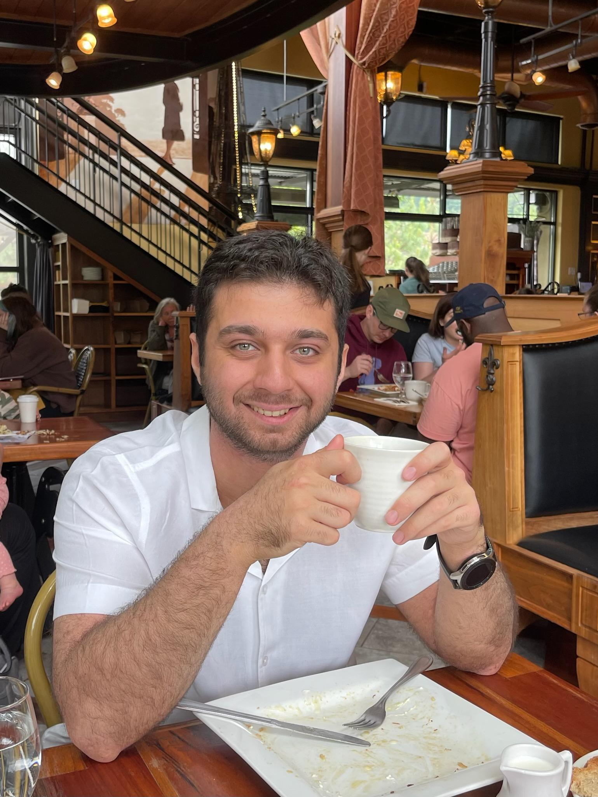

Robust AI
Designing attacks and defenses for image models, diffusion pipelines, and multimodal RL agents.

AI/ML researcher - PhD candidate - Portland, Oregon
I am Shayan Jalalipour, a Computer Science PhD candidate at Portland State University working across machine learning, reinforcement learning, computer vision, generative models, and AI code reliability.
AI and ML roles
Designing attacks and defenses for image models, diffusion pipelines, and multimodal RL agents.
Working with diffusion models, transformers, LLMs, multimodal models, and RL environments.
Using object detection, GIS, LiDAR-derived data, and spatial analysis for applied ML problems.
Building with Python, PyTorch, CUDA, TensorFlow, Hugging Face, Docker, Kubernetes, SQL, AWS, and GCP.
Current work
Jun 2022 - Present
NSF-funded research in computer vision, generative models, adversarial robustness, and reinforcement learning.
Feb 2026 - Present
Architecting production ML pipelines, agentic workflows, vision models, and MLOps infrastructure for client AI systems.
Oct 2025 - Present
Reviewing LLM-generated ML code for scientific validity, edge cases, and reproducibility risks.
Sep 2021 - Present
Supporting courses in Reinforcement Learning, Virtual Reality, and Natural Language Processing.
Jun 2019 - Sep 2019
Built data analysis tools and geospatial pipelines for operational data.
Publications
Latest publication
Studies adversarial vulnerabilities and emergent behavior in multimodal RL agents.
2026 International Conference on Semantic Computing (ICSC)
Read on IEEE XploreIntroduces a diffusion-based adversarial attack with faster convergence and lower training overhead.
2025 19th International Conference on Semantic Computing (ICSC)
Read on IEEE XplorePresents a VAE-based defense for removing adversarial perturbations from images.
2023 Fifth International Conference on Transdisciplinary AI (TransAI)
Read on IEEE XploreEvaluates Faster R-CNN, DINO, DETR:DINO, and YOLOv5 for drainage-structure detection.
2023 Fifth International Conference on Transdisciplinary AI (TransAI)
Read on IEEE Xplore